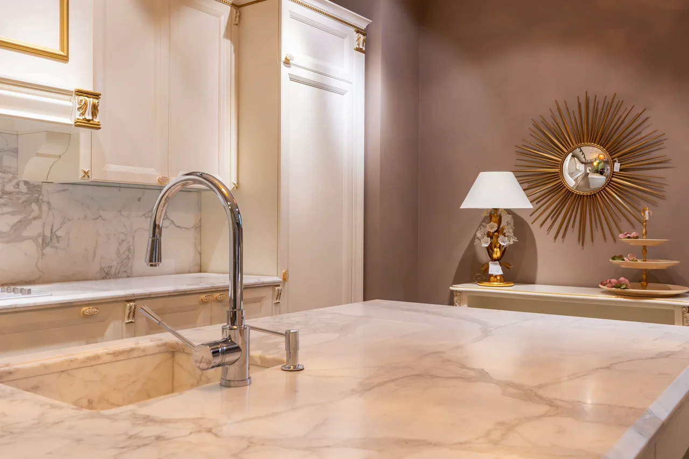
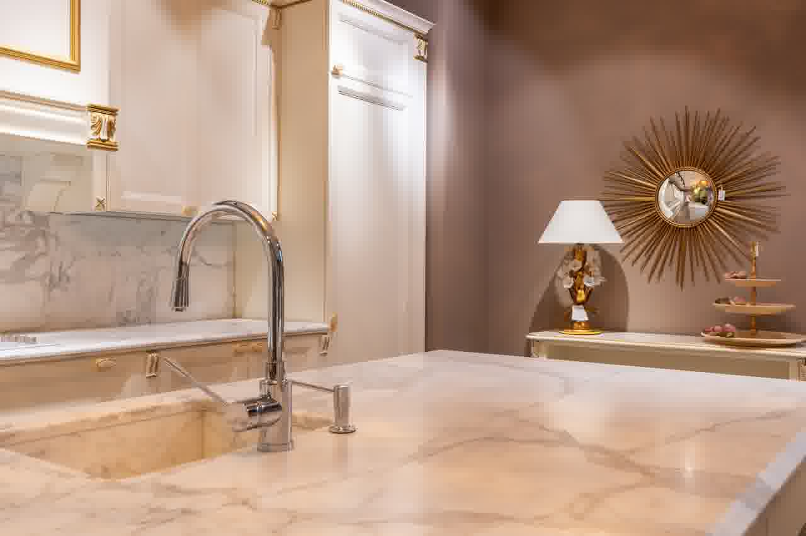

8. Ana Kategori
Sosyal Yaşam Alanı Olarak Modern Mutfak
Yemek pişirmenin ötesinde, aileniz ve misafirlerinizle keyifli vakit geçirebileceğiniz ada konseptleri.

Ada Mutfak & Bar Masası
Ocak ve eviyeyi adaya taşıyan ya da bar tabureleriyle yemek masası fonksiyonunu birleştiren lüks ada çözümleri.
- Ada içi gizli priz kulesi & çöp kovası
- Tavandan sarkan ada davlumbaz uyumu

Çimstone, Belenco & Porselen Tezgah
Çizilmez, leke tutmaz ve sıcağa dayanıklı 1. sınıf kuvars ve İtalyan porselen tezgah uygulamaları.
- Limon, sirke ve yağa karşı %100 asit direnci
- Tezgah altı sıfır eviye montajı

Tezgah Arası & Gizli Lineer LED
Tezgah altı el sensörlü lineer LED profiller, balıksırtı veya büyük ebat mermer desen seramik kaplamaları.
- El sürmeden yanan temassız sensörlü LED
- Temizliği kolay derzsiz porselen kaplama